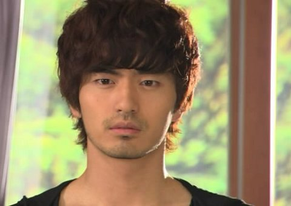

天气越来越冷了，窝在床上不分昼夜的追剧是我的终极梦想。
韩剧
说实话，对《伊甸园之东》我是越来越没有追看下去的热情，剧情发展精彩吗？精彩；演员不够帅气吗？宋承宪的落魄造型着实让我迷到眩晕；难道我真有大制作回避症？应该是。
《他们生活的世界》也是务必要看的，玄彬和宋慧乔的搭配太合我的心意了~
近期大爱李真旭，这个有着纯真络腮胡的男人，所以又回去补旧剧，硬着头皮忍受李宗赫的刻板，看小真在《强敌》中和蔡琳姐姐玩暧昧；《b&a整形外科》倒是出乎意料的好看，只是小真看来有着成为悲惨男二的前景；所以《玻璃之城》中貌似又要成为败给大叔的失意男。
（附送小真的截图一张，说不帅的自动回避 ）
）
日剧
出乎意料，这一季日剧追的蛮多。
《公主和青蛙》，很老套的剧情，无新意的表演。如果说我只是为了多看柏原崇一眼，你会不会觉得我很念旧？亦也许是为了多感受下狮子丸的可爱？
（小崇在里面的造型，让我欲哭无泪啊）
（可爱的狮子丸）
《王牌男公关》，没有《夜王》的精彩，但同样精致的型男倒是不缺少。已婚男重新杀回男公关界，只是这个噱头或许就已经足够。ps：如果我说三浦翔平很帅，不知道有没有人反对~
《oh my girl》，速水帅哥看来是尝到了《绝对男友》的甜头，继续主打温情牌。演技有没有进步不予置评，帅气倒是更上层楼。《女帝》中走出来的加藤rosa，转型期待中……
被爱国情绪影响，《ol日本》应该会追下去，据说此剧在日本收拾低迷，难道中国元素就这么不讨巧？
除了广末凉子外很久没有特别喜欢的日本女演员，上野树里的瑠可，崛北真希的野猪；《爱无罪》继续沿用《最后的朋友》路线，只是我却有了并不乐观的预见。
出乎意料的对《流星之绊》没有兴趣，《我为屋狂》也追不下去，可一度我是很喜欢《Stand Up》中的铃木杏~我果然是个不入流的观者？
美剧
我保证我绝对不是cw的托儿！
但对《Gossip Girl》的中毒状况越来越严重，小j的烟熏妆也能让我象发现新大陆般兴奋，对b的好感貌似越来越多，我知道自己是八卦动物，上东区的私人生活始终对我有着莫名的吸引。
《one tree hill》走到了第六季，我承认我已经追出了感情，所以才能容忍它短暂的平淡。
除了购买的版权，我实在想象不出《丑女无敌》有哪一点可以和《ugly betty》相提并论，第三季betty又有了新桃花，林赛的短暂出演带来了一个小高潮，继续让betty的坚韧不拔来抚慰我的失落好了~
tvb
终于等来了《珠光宝气》，很喜欢的开场，很喜欢的演员，希望也会有个很喜欢的结局。邵美琪在这部剧中让我再一次看到光芒，一如《创世纪》时的Tina，和黄德斌的配戏越来越默契，和林保怡的感情纠葛也让我万分期待。陈豪带给了继《金枝欲孽》后的第二个中意人物，和黎姿的搭配让我继续发烧~现时就只在专心等待bo和钟linda的出场，期待不会失望。
阿佘的《东山飘雨西关晴》在诚实中放弃。